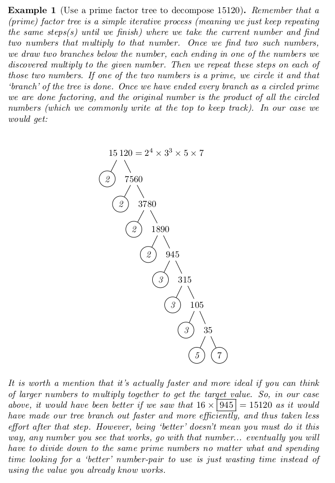

This section introduces radicals and some common uses for them.
First we revisit a numeric factorization tool that you may (or may not) have learned quite some time ago, called a prime factor tree. This will be supremely helpful in determining the prime factors of any given number, which is necessary for simplifying a numeric radical.
We use the following steps to simplify any numeric radical:
For example, if our radicand is we would write .
For our example we would write .
In our example we have . This is because the root value is so we want to group factors in pairs; hence we have (which we simply write as , but you can write it out the long way if you want), which leaves as the remainder).
In our example we have:
| = | ||
In our example we have:
Let’s consider another example; simplifying . This may seem intimidating at first, but the key here is to use the prime factor tree to decompose the large number into a product of smaller numbers. Let’s revisit how to do this before we continue.

Now that we have the prime factorization we can continue to our example.
Simplify the numeric root:
Since we have already determined the prime factorization, we will write out our radical with the radicand in the factored
form: As before, we want to group these terms as each factor to the root level ( in this case) with remainders.
Specifically we have and , and the and are both left alone (since they have powers less than to start with).
So we would write; Then, pulling out the pieces that are grouped we get: And, finally we can simplify we get:
And so we have our final simplified expression and we conclude: